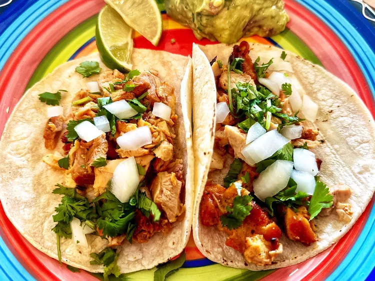

Chicken Tacos
Home

Description
This chicken is seasoned and ready to grill. These delicious tacos are easy to make and topped with cilantro and onions.
Can be served with guacamole, salsa and fresh lime wedges on the side.
Ingredients
- 1 pound chicken to grill (seasoned, boneless, skinless chicken).
- 1 onion, diced
- 1/2 cup chopped cilantro
- 8 corn tortillas
Steps
- Preheat an outdoor grill for medium-high heat and lightly oil the grate.
- Grill chicken, turning occasionally, until juices run clear and chicken is no longer pink at the center, about 7 minutes. An instant-read thermometer, inserted near the center, should read at least 165 degrees F (74 degrees C).
- Heat corn tortillas until soft and pliable in the microwave, about 1 minute.
- Top with chicken, onions, and cilantro. And they are ready to serve.